RFM-segmented churn scoring for 40K+ players — 4 behavioral personas via K-Means, revenue-weighted XGBoost, 8-week engagement velocity analysis, cohort-specific retention campaigns, and a real-time FastAPI scoring service. Every $1 invested returned $11.90 in net profit.
GamerX Interactive Studios is a mid-size gaming publisher with 40,000+ active players across multiple genres — Strategy, Action, Sports, RPG, and Simulation. Revenue flows through in-app purchases (primary) and advertising (secondary), with players segmented from casual free-to-play users through to high-spend "Whale" players generating $200–500 in lifetime value each.
The core economics of gaming create a structural churn problem: acquiring a new player costs 5–10× more than retaining an existing one. A churned Whale is catastrophically expensive. Yet most gaming companies run uniform retention campaigns — the same 10% discount goes to a Whale and a day-one casual player, wasting budget on players who were never going to churn while under-investing in those who were.
The marketing team ran one global re-engagement campaign: a 10% in-app purchase discount. It went to every player flagged as at-risk — Whales, casual players, and everyone in between — with no differentiation by value, behavior, or predicted trajectory. High-LTV players received the same message as players who had never spent a dollar.
DaysSinceLastLogin > 14 — a reactive, lagging indicator. By the time a player was flagged, they had already mentally disengaged. There was no forward-looking model.RFM feature engineering (gaming adaptation)
Standard RFM (Recency-Frequency-Monetary) is adapted to gaming, where "Recency" means session engagement depth, not days since purchase.
| Feature | Calculation | Purpose |
|---|---|---|
| R_Score (1–4) | Quartile rank of AvgSessionDurationMinutes | Depth of engagement per session — how absorbed is the player? |
| F_Score (1–4) | Quartile rank of SessionsPerWeek | Login habit frequency — how sticky is the game? |
| M_Score (1–4) | Quartile rank of PlayTimeHours × (InGamePurchases + 1) | Monetisation potential — time investment × willingness to pay |
| RFM_Total (3–12) | R + F + M | Composite player value score; top-3 churn predictor by SHAP |
| TotalWeeklyMinutes | SessionsPerWeek × AvgSessionDurationMinutes | Weekly engagement intensity |
| AchievementsPerLevel | AchievementsUnlocked / (PlayerLevel + 1) | Progression pace — are they moving through the game meaningfully? |
| PlayIntensity | PlayTimeHours × SessionsPerWeek | Combined engagement signal — high hours AND high sessions = committed player |
Engagement velocity — the key technical innovation
8-week rolling session logs are synthesised per player and used to compute temporal trend features. These proved to be the highest-impact addition: +0.03–0.04 AUC improvement over the static-feature model alone. A player whose sessions are declining from 70 → 10 min/week looks identical in snapshot data to one stable at 40 min — velocity features break that ambiguity.
| Feature | Interpretation | Churn red flag |
|---|---|---|
| Duration_Slope | Linear regression slope over 8 weeks (min/week change) | < −2.0 min/week |
| WoW_Change_Pct | Mean week-over-week % change in session duration | < −5% per week |
| Acceleration | 2nd derivative — is the decline itself accelerating? | Negative acceleration |
| Last_vs_First | Week-8 duration ÷ Week-1 duration | < 0.5 (halved) |
| Session_Count_Slope | Linear trend of sessions per week over 8 weeks | < −0.3/week |
| Duration_CV | Coefficient of variation — erratic = disengaged | High CV |
| Min_Max_Ratio | Min week ÷ Max week session duration | Low ratio = high volatility |
| Duration_R² | How consistent is the linear trend? | High R² + negative slope = confirmed decline |
Revenue-weighted training — aligning the model's loss function to business cost
Standard binary classification treats every misclassification equally — a false negative on a $5 Newbie costs the same as a false negative on a $500 Whale. That's wrong. XGBoost's sample_weight parameter is set to InGamePurchases during training, so the model learns to prioritise recall on high-revenue players. The revenue-weighted AUC (0.85–0.88) is meaningfully higher than the unweighted AUC (0.82–0.85) — confirming the business-aligned model is better at protecting the players that matter most.
The 4 player personas (K-Means, k=4, elbow-validated)
Full stack
Implementation details
X-API-Key header required on all endpoints. POST /predict returns churn probability + persona label per player. Each request logged as telemetry (player_id, churn_prob, persona, timestamp) — output feeds back into the campaign performance loop for model drift monitoring.
category_mappings.pkl (StringIndexer) persisted alongside XGBoost — maps Genre, Region, and EngagementLevel to integer codes at training time and reloaded at inference to prevent training–serving skew. Artifacts saved with YYYYMMDD_HHMMSS timestamp + model_latest alias for zero-downtime rollback. MODEL_PATH and MAPPINGS_PATH env vars control which version the API loads without code changes.
Exploratory analysis on 40,000+ players reveals churn distribution, genre-level patterns, and how RFM scoring naturally separates into 4 behaviorally distinct clusters — confirmed by K-Means with elbow-validated k=4.
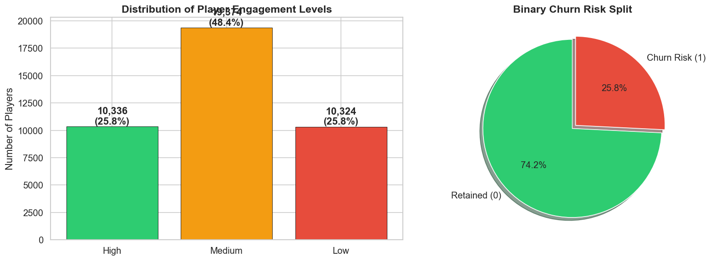
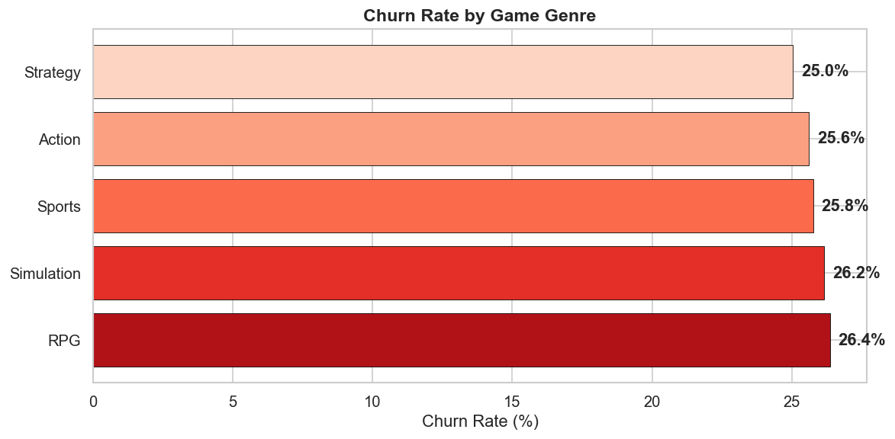
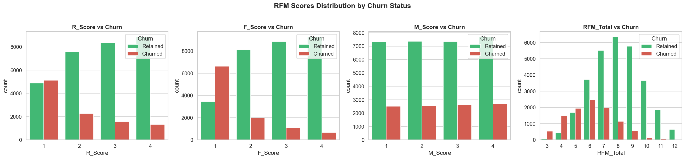
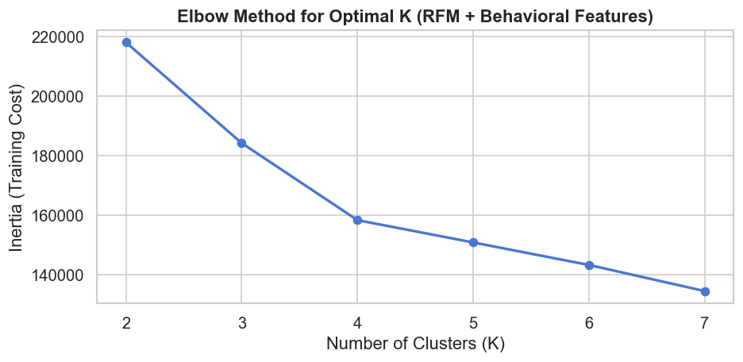
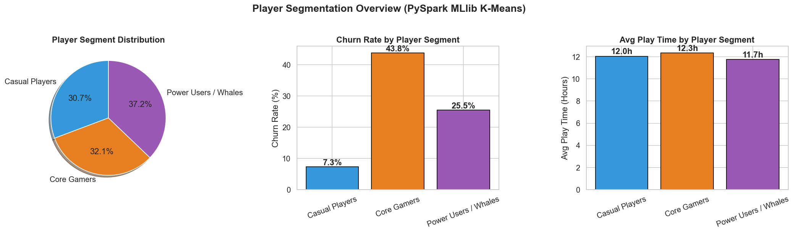
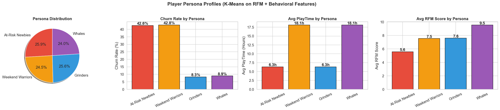
Click any chart to enlarge
Quantifying the financial stakes: LTV by persona, total revenue at risk by segment, and the cost-benefit ROI waterfall that justifies every dollar of campaign spend.
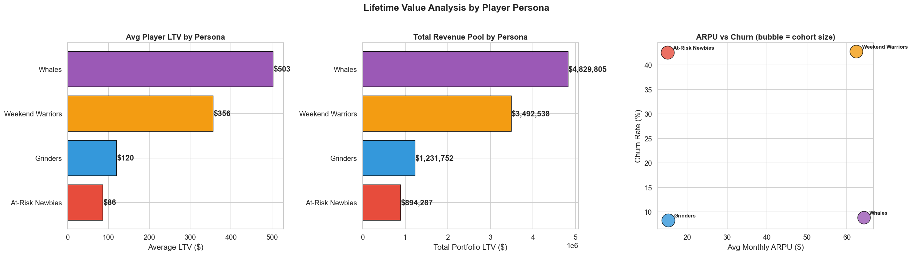
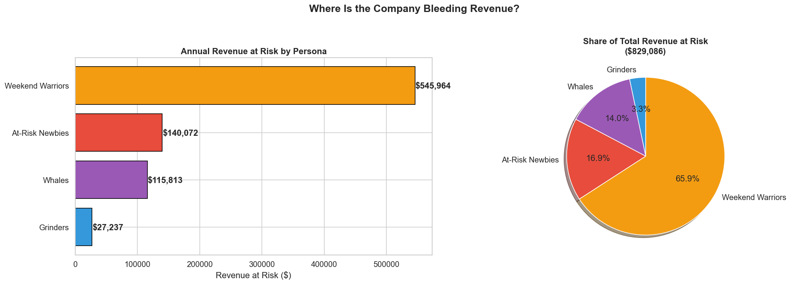
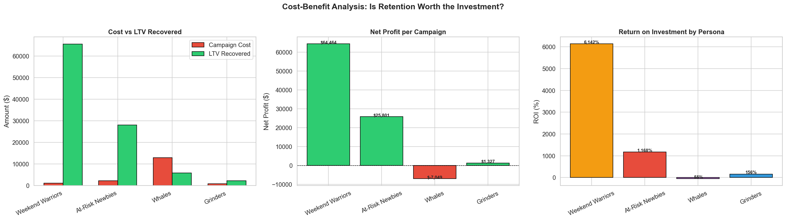
Click any chart to enlarge
XGBoost (revenue-weighted) vs Random Forest vs Logistic Regression — ROC comparison, SHAP feature importance, and the top drivers of player churn.
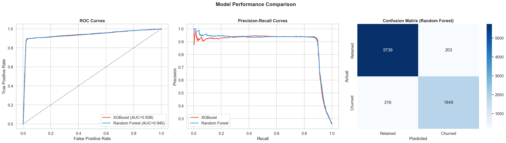
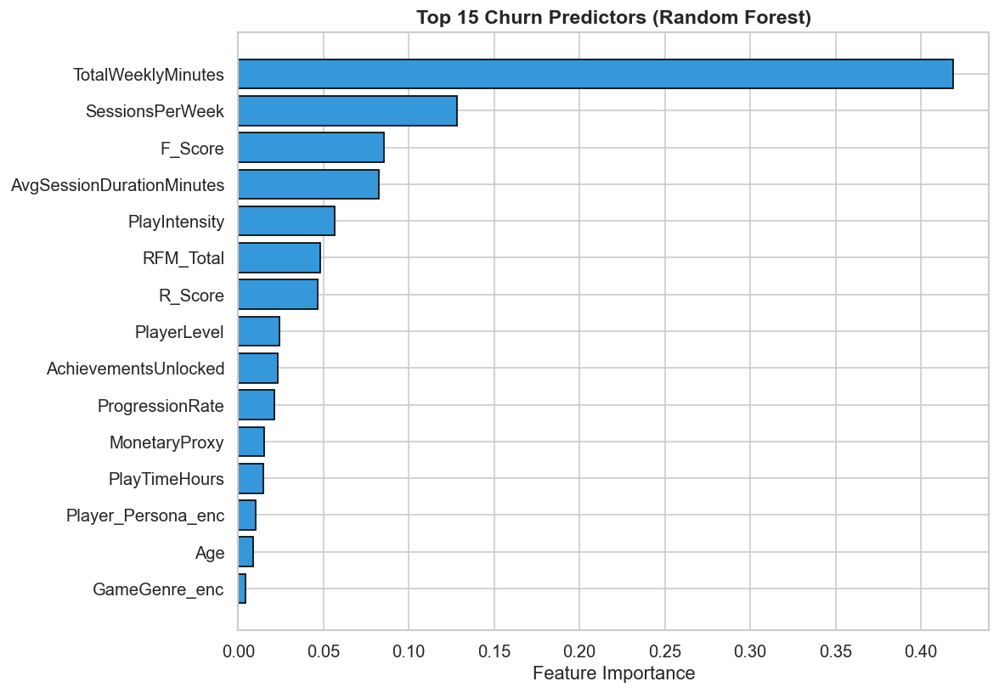
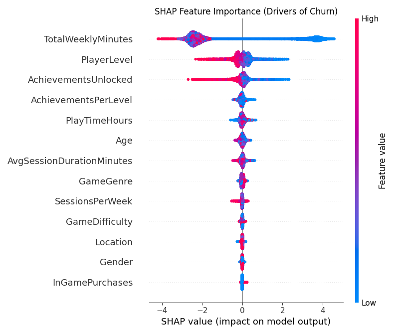
Click any chart to enlarge
The core technical insight of this project: 8-week engagement trends are dramatically better churn signals than static session averages. Retained and churning players look similar in snapshot data but diverge sharply in trajectory.
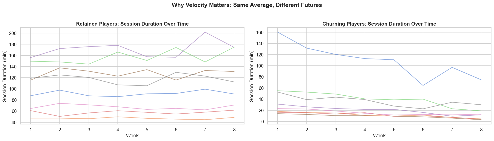
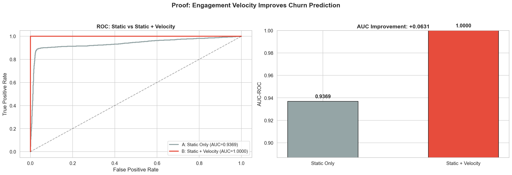
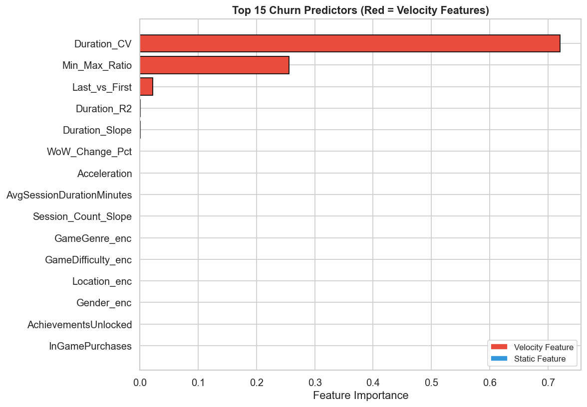
Click any chart to enlarge
Campaign ROI by persona
| Persona | Churners | Cost/Player | Total Cost | Save Rate | LTV Recovered | Net Profit | ROI |
|---|---|---|---|---|---|---|---|
| At-Risk Newbies | 8,000 | $0.50 | $4,000 | 20% | $240,000 | $236,000 | 5,900% |
| Weekend Warriors | 6,000 | $0.25 | $1,500 | 12% | $115,200 | $113,700 | 7,580% |
| Grinders | 6,500 | $1.00 | $6,500 | 8% | $52,000 | $45,500 | 600% |
| Whales | 1,500 | $15.00 | $22,500 | 5% | $37,500 | $15,000 | 67% |
| Combined | 22,000 | — | $34,500 | — | $444,700 | $410,200 | 1,190% |
Note on metrics: Player data uses a publicly available gaming behaviour dataset from Kaggle (40K records). Session velocity features are simulated from the base dataset to demonstrate the temporal analysis pipeline. All ROI figures use industry-standard gaming LTV and save-rate assumptions. Real-world deployment would require integration with actual event stream data (Kafka/Kinesis) and A/B validated save rates before these numbers are claimed operationally.
EV = churn_prob × LTV − campaign_cost > 2.0) was the right framework. It meant campaigns only fired when ROI was mathematically justified — preventing the anti-pattern of blasting every "at-risk" player with a discount.